01 — SELF
自分
自分の心が分かる。
自分で、自分の一歩を選べる。
Brifuが大切にしているEQの考え方と、その土台となる「EQ認識理論」、EQを学ぶことで起きる変化をご紹介します。
DEFINITION
EQ（Emotional Intelligence）は、「感情をコントロールする力」だと思われがちです。私たちの定義は少し違います。感情を、認識を、行動を、自分と相手の可能性を活かすために使う力。それがEQです。
自分の感情に気づき、認識を見直し、目的から選び、行動する。相手の感情に目を向け、認識の違いを確かめ、本音で対話する。この往復が、自分にも相手にも「可能性」を残します。

SELF
自己理解
感情・価値観・認識を知る

EXPRESS
感情の言語化
自分の状態を言葉にする

OTHERS
他者理解・対話
相手の認識に関心を向ける

ACTION
意思決定・行動
目的から選び、振り返る
WHY THE HEART
それは、技術でも、制度でも、仕組みでもなく、人の心。
心が変わると、次のことが変わっていきます。
01
考え方
が変わる
02
感じ方
が変わる
03
選択
が変わる
04
行動
が変わる
05
人との関係
が変わる
だからBrifuは、「人の心」にイノベーションを起こします。
EQ RECOGNITION THEORY
感情が認識をつくり、認識が選択を決め、選択が行動になり、行動が結果を生む。
その結果を振り返ることで、認識が更新される。私たちは、この循環そのものを変えていきます。
感情
最初に動くのは、いつも感情
認識
感情が「世界の見え方」をつくる
選択
見えている世界の中から選ぶ
行動
選択が、行動として表れる
結果
行動が、現実をつくる
振り返り
結果を、感情と認識から見直す
認識の更新
世界の見え方が、変わる
更新された認識が、次の感情・選択・行動を変えていきます。
人は認識によって行動する。認識を整え、感情を力に変え、豊かな人生と社会を創る。— EQ認識理論
TWO WAYS TO GROW

HORIZONTAL GROWTH
感情リテラシー、コミュニケーション、自己理解・他者理解など、EQの知識とスキルを身につける成長です。
VERTICAL GROWTH
自分の認識を自覚し、更新していく成長です。物事の見え方そのものが変わり、同じ場面で別の選び方ができるようになります。
傾聴や質問の技術を身につけても、内側に「部下は導くべき存在だ」という認識があると、言葉の端々に評価する側の空気がにじみ、部下は安心できません。「部下は、可能性を持ったひとりの人だ」と見方が変わったとき、同じスキルでも面談の質が大きく変わります。スキル（横成長）は、認識の成熟（縦成長）に支えられて、はじめて本当に機能します。
WHAT CHANGES
自分から始まり、人へ、チームへ、組織へ、社会へ。一つの変化が、次の変化を生みます。
01 — SELF
自分の心が分かる。
自分で、自分の一歩を選べる。
02 — RELATIONSHIP
相手の心にも、目を向けられる。
すれ違いを減らし、本音で対話できる。

03 — TEAM
一人ひとりの可能性を活かせる。
人が活きるチームへ。

04 — ORGANIZATION
人の成長と、組織の目的がつながる。
理念が、人の行動に表れる組織へ。

05 — SOCIETY
一人の変化が、次の人へ伝わる。
「お互いを大切にする社会」をつくる。
ご相談内容がまだ整理できていなくても大丈夫です。いまの状況をお聞きするところから始めます。
メール：info@brifu.co.jp